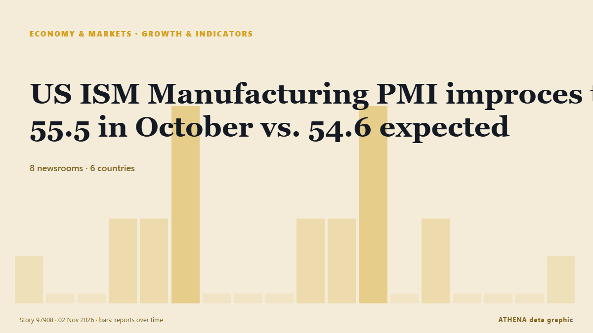

US ISM Manufacturing PMI improces to 55.5 in October vs. 54.6 expected

Business activity in the United States (US) manufacturing sector expanded at an accelerating pace in October, with the Institute for Supply Management's Manufacturing Purchasing Managers' Index (PMI)… από FXStreet
Αναφέρθηκε ανεξάρτητα από 8 μέσα σε 6 χώρες από τις 2 Νοε, πρώτο το People's Daily English — page reader· η κάλυψη εξασθενεί. Το ATHENA εκτιμά τον κίνδυνο μέτριο (2.5/10), κυρίως λόγω της σοβαρότητάς του και της εμβέλειάς του. Βεβαιότητα 83% (υψηλή): το επιβεβαιώνουν 8 ανεξάρτητα μέσα, μέση αξιοπιστία 68%. Μέσα ανά χώρα: Ισπανία (11), Ηνωμένες Πολιτείες (2), Κίνα (1). Κάλυψη: 2 Νοε έως 2 Νοε, 17 ώρες.
Γιατί έχει σημασία: Οι οικονομικές εξελίξεις και οι εξελίξεις στις αγορές περνούν στις τιμές, στην απασχόληση, στο κόστος δανεισμού και στις επενδύσεις.
Τι άλλαξε: 22 νέες αναφορές από 8 μέσα στο 24ωρο έως 2 Νοε.
Πρώτη διατύπωση: Sweden Manufacturing PMI increased to 60.5 in October from previous 58.1
Οι τίτλοι των ειδήσεων παρουσιάζονται στα αγγλικά, όπως δημοσιεύτηκαν.
Με μια ματιά
Επιλέγεται, βαθμολογείται και γράφεται από τη δημοσιευμένη μεθοδολογία του ATHENA. Κανένας συντάκτης δεν παρεμβαίνει σε μεμονωμένα γεγονότα. Πώς παράγεται ›
| 02 Nov 03:37 UTC | 1 |
|---|---|
| 02 Nov 04:37 UTC | 0 |
| 02 Nov 05:37 UTC | 0 |
| 02 Nov 06:37 UTC | 2 |
| 02 Nov 07:37 UTC | 2 |
| 02 Nov 08:37 UTC | 5 |
| 02 Nov 09:37 UTC | 0 |
| 02 Nov 10:37 UTC | 0 |
| 02 Nov 11:37 UTC | 0 |
| 02 Nov 12:37 UTC | 2 |
| 02 Nov 13:37 UTC | 2 |
| 02 Nov 14:37 UTC | 5 |
| 02 Nov 15:37 UTC | 0 |
| 02 Nov 16:37 UTC | 2 |
| 02 Nov 17:37 UTC | 0 |
| 02 Nov 18:37 UTC | 0 |
| 02 Nov 19:37 UTC | 0 |
| 02 Nov 20:37 UTC | 1 |
| 02 Nov 07:54 UTC | 1.9 |
|---|---|
| 02 Nov 15:59 UTC | 2.5 |
| 02 Nov 21:06 UTC | 2.5 |
Γιατί αυτοί οι αριθμοί
Σημασία
Κίνδυνος
Βεβαιότητα
Η κάλυψη — ποιος το ανέφερε και πότε
ο τίτλος όπως δημοσιεύτηκε · ανοίγει το πρωτότυπο- People's Daily English — page reader · ΚίναHigh-tech entities cushion PMI slowdown
- Asharq Al-Awsat (English) · Σαουδική ΑραβίαTurkish Manufacturing Contracts in October at Fastest Pace Since June, PMI Shows
- FXStreet · ΙσπανίαSweden Manufacturing PMI increased to 60.5 in October from previous 58.1
- TASS (English) · ΡωσίαRussian manufacturing industries PMI grew to 49.9 points in October
- FXStreet · ΙσπανίαSpain HCOB Manufacturing PMI came in at 52.2, above forecasts (50.6) in October
- FXStreet · ΙσπανίαItaly HCOB Manufacturing PMI came in at 49.4, above expectations (0) in October
- FXStreet · ΙσπανίαFrance HCOB Manufacturing PMI came in at 49.5, above forecasts (49.3) in October
- FXStreet · ΙσπανίαGermany HCOB Manufacturing PMI meets forecasts (54.2) in October
- FXStreet · ΙσπανίαEurozone HCOB Manufacturing PMI above forecasts (52.4) in October: Actual (53.3)
- investingLive (ForexLive) · INTEurozone manufacturing PMI holds up in October but rising price pressures give the ECB another headache
- The Business Times · ΣιγκαπούρηSingapore factory growth slows in October as manufacturing PMI dips to 51.4
- FXStreet · ΙσπανίαSingapore Manufacturing PMI down to 51.4 in October from previous 51.7
- FXStreet · ΙσπανίαCanada S&P Global Manufacturing PMI declined to 49.6 in October from previous 51.5
- investingLive (ForexLive) · INTCanada S&P global manufacturing PMI 49.6 versus 51.5 last month
- investingLive (ForexLive) · INTUS S&P Global final manufacturing PMI for October 54.9 vs 56.0 preliminary
- FXStreet · ΙσπανίαUnited States S&P Global Manufacturing PMI registered at 54.9, below expectations (56) in October
- FXStreet · ΙσπανίαUnited States ISM Manufacturing New Orders Index up to 55.5 in October from previous 55.3
- investingLive (ForexLive) · INTUS ISM manufacturing PMI for October 55.5 versus 54.5 estimate
- FXStreet · ΙσπανίαUS ISM Manufacturing PMI improces to 55.5 in October vs. 54.6 expected
- FreightWaves · Ηνωμένες ΠολιτείεςOctober’s 55.5 manufacturing PMI beats expectations
- IndustryWeek · Ηνωμένες ΠολιτείεςOctober ISM Report: Manufacturing PMI Grows to 55.5%, Extending 10-Month Streak
- investingLive (ForexLive) · INTinvestingLive Americas FX news wrap 2 Nov: It’s a wrap: AI selling overwhelms oil’s plunge